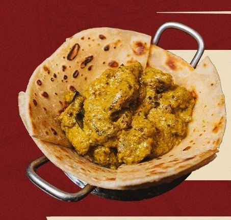
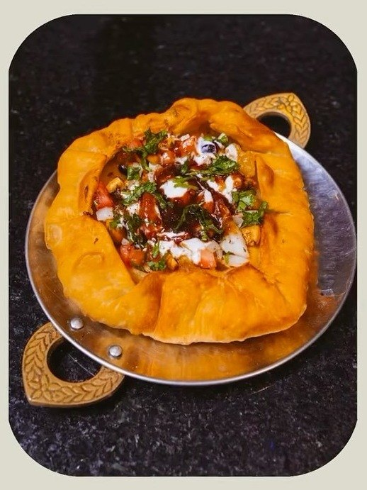
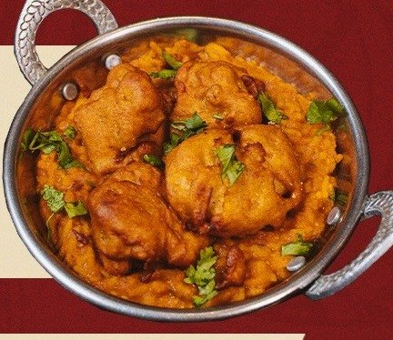
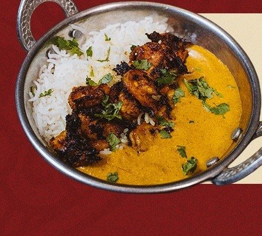

Restaurant Week
Afghani Mutton Curry & Naan
Curry de carneiro com naan, um dos principais do jantar do Restaurant Week.
Rio Vermelho Salvador · culinária indiana
Thali, currys para dividir, biryani, pães e chutneys feitos na casa, com a picância ajustada ao paladar baiano. “Para os indianos, toda visita que chega em sua casa ou em seu estabelecimento é como um Deus que vem até eles.”

Por onde começar
Até aqui, o cardápio com preços só aparecia em fotos na ficha do Google. Aqui ele abre no celular, com busca, selos e o pré-pedido da mesa.
Entradas, Thali, currys, arroz, pães, chutneys, sobremesas e drinks, com busca.
Abrir o cardápioO ThaliRoti, arroz, dal, chole, sobremesa e a proteína que você escolher.
Conhecer o ThaliPicânciaOs selos do cardápio: nível de pimenta, vegano e lácteo.
Ver a escalaSua mesaDia, horário e pessoas. A mensagem chega pronta e a casa confirma.
Pedir mesaNa mesa do Vishnu
Pratos fotografados pela casa para o menu do Restaurant Week 2026, que vai até 01/11. O cardápio de todo dia está completo na página do cardápio.

Curry de carneiro com naan, um dos principais do jantar do Restaurant Week.

Couve-flor empanada sobre bisibelebath, servido no kadai.

Camarão masala com arroz e malai ki sabzi.
Monte a refeição à indiana
Na Índia, o curry vem ao centro e todo mundo divide. No Vishnu, cada curry “serve para duas pessoas”. Toque em “+” e monte o pré-pedido da mesa: a lista vai pronta para o WhatsApp da casa, sem comissão de aplicativo.
1
Serve para duas pessoas
2
Para molhar no curry
3
Basmati, do simples ao biryani
4
R$ 10,90 cada
Preços do cardápio publicado pela casa, sujeitos a alteração. Pré-pedido para consumo no salão: a equipe confirma itens e disponibilidade pelo WhatsApp.
O Thali
“Prato Típico da índia que apresenta uma refeição completa, formada por Roti, arroz (Coconut Rice ou Pulihora), Dal Tadka, Chole Masala e Sobremesa.”Cardápio do Vishnu
Escolha sua picância
“Na Índia se come no nível 10, aqui no nível 1, nível 2 de picância … Então, eu diminuo a picância, só que a ardência continua.”Chef Vishnu, à Metro1
Vegano prato vegano, como marca o cardápioLácteo leva leite ou iogurte (🥛 no cardápio)Ver todos os pratos por selo
O chef
“Eu sou de uma família onde o curry e o amor são muito importantes!”Arte do cardápio do Vishnu
Executivo de Recursos Humanos, Vishnu Gajula trocou a carreira pela cozinha durante a pandemia. Como contou A Tarde, montou o cardápio com receitas do seu país, dicas da mãe e ingredientes que se encontram na Bahia, como o tamarindo, ao lado de temperos trazidos da Ásia, como o cardamomo.
A história do chef VishnuQuem já foi
Fui com minha esposa hoje a noite e foi uma delícia. A gente mora em Nova York e sempre estamos comendo comida indiana por lá. Sem dúvidas, esse é o melhor restaurante indiano que a gente provou no Brasil. Recomendo muito!!!
Ambiente muito massa, serviço atencioso, e comida indiana top. Provamos o Thali vegetariano e com frango. Ambos deliciosos :) Vou voltar pra provar o Biryani.
Além de pratos com cordeiro e frango há algumas opções veganas.
Avaliações publicadas no Google; nota e total consultados na ficha da casa em 02/10/2026.
Galeria
Fotos publicadas pela casa. Ainda faltam fotos do salão por dentro: na versão final, entram as que a casa enviar.
Peça sua mesa
Hoje, quem quer ir ao Vishnu precisa perguntar tudo pelo WhatsApp. Aqui o cliente escolhe o dia, o horário e quantas pessoas vêm, conta a picância que prefere, e a mensagem chega organizada para a equipe responder.

Dúvidas frequentes
A casa não publica um sistema de reservas. Peça a mesa pelo WhatsApp (71) 98400-5909: a equipe responde e confirma conforme a disponibilidade.
O cardápio marca a picância de 1 a 4 pimentas. A maioria dos pratos tem duas; o Mirchi Bajji tem quatro. O próprio chef diz que diminui a picância para o paladar daqui.
Sim. O cardápio marca como vegano o Thali com Baigan ka Bartha, Chole Masala, Dal Tadka, Pulihora, Coconut Rice, Vegetable Biryani, Gajar ka Halwa e outros. Há também o Thali vegetariano com Paneer Butter Masala.
É a refeição completa num prato: roti, arroz, Dal Tadka, Chole Masala e sobremesa, com a proteína que você escolher entre sete versões.
Pela ficha do Google: quarta a sexta, 17h30 às 23h; sábado, 12h às 16h30 e 17h30 às 23h; domingo, 12h às 17h. Segunda e terça, fechado.
O cardápio informa: “10% da taxa de serviço é opcional.”
O cardápio publicado é o do salão. As Silver Pearls, de cardamomo, são vendidas em pacotinhos; para outros pratos, pergunte pelo WhatsApp.
Namastê
Escolha os pratos no cardápio e peça a mesa pelo WhatsApp. A equipe da casa responde e confirma.